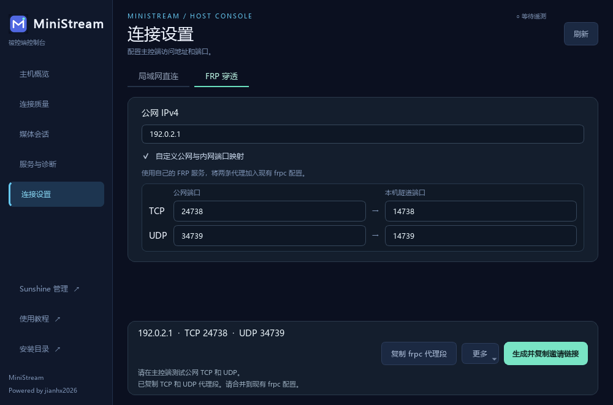
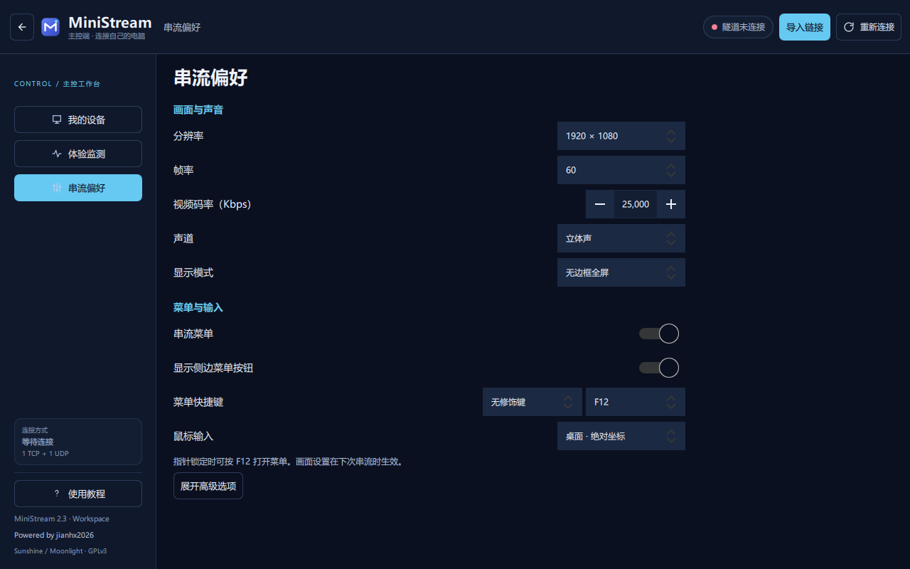

GUIDE / MINISTREAM 2.3
从安装，
到第一次连接。
适用于 MiniStream 2.3。先确认两端角色，再验证隧道认证、UDP 通路与实际媒体。请只连接自己拥有或获授权的设备。
下载目标 v2.3.1 · 安装包与校验清单以对应 GitHub Release 为准
01 / 先确认两台电脑的角色
被控端（Host）是实际运行游戏和桌面的主机；主控端（Client）是你用来查看画面、操作鼠标键盘的电脑。两端使用分端工作台，不要在被控端与主控端之间混淆安装包。
准备两台 Windows 电脑、实际可达的网络路径、隧道凭据和 Sunshine 管理信息。Windows 需要与程序架构匹配的微软 Visual C++ v14 运行库；请从微软官方页面获取，不要下载散装 DLL 替换系统文件。
微软运行库说明 ↗
服务管理和安装可能需要 Windows 管理员授权。当前尚未完成“没有 ISO 或管理员权限”的限制环境验收，不能据此宣称此类环境可用。
02 / 在主机安装被控端
安装 Host 后打开控制台。点「运行本机自检」，按结果启动 Sunshine、启动隧道或修复 Windows 防火墙规则。进入「连接设置」，同一网络选「局域网模式」，自动选取地址。跨网选「FRP 内网穿透模式」，填穿透后的 IPv4，映射端口不同时勾选「自定义公网与内网端口映射」。在底部复制 frpc 代理段或生成邀请，再由外网主控端测试连通。
 新版真实被控端程序 / 离线或测试状态。截图不表示真实游戏性能。
新版真实被控端程序 / 离线或测试状态。截图不表示真实游戏性能。“本机已监听”只说明本机端口存在监听，不等于 FRP、公网或 UDP 通路已验证。首次使用还需在主控端测试连接与配对；需要 PIN 时，从被控端打开 Sunshine 管理页面完成授权。
新安装的隧道口令为 12–64 个字母、数字或 _ . @ -；可在「连接设置 → 更换隧道口令」修改。运行中的隧道会短暂重启；请在主控端更新口令再重新连接。覆盖升级保留已有口令。隧道口令经标准输入交给后台，不进入命令行、计划任务或安装日志。配置与日志 ACL 用于限制本机文件访问，不是端到端加密。
关闭窗口会收起到系统托盘，后台服务继续运行。点击托盘图标或再次打开快捷方式可恢复窗口。要主动断开服务，请在「服务与诊断」点击相应的「停止」。

被控端连接设置的端口映射示例
03 / 在另一台电脑导入链接
- 打开主控端，在首启的「导入连接链接」粘贴被控端复制的完整邀请，点「导入并连接」。也可以用浏览器打开邀请，再允许启动 MiniStream。
- 隧道认证成功后点「查看设备」，选择电脑。首次配对时将 PIN 输入被控端的 Sunshine 管理页，再打开桌面或游戏。
- 串流中点击画面左边缘的菜单按钮查看连接通道与串流 RTT，或切换鼠标模式、性能统计、全屏和最小化。指针被游戏锁定时按 F12。可在「串流偏好」更改快捷键或隐藏按钮。

主控端 2.3.2 的串流偏好邀请包含隧道口令，请仅私发。更换隧道口令或公网端口后，请从被控端复制新链接并重新导入。
04 / 局域网与跨网络连接
同一网络先使用主机局域网 IPv4 验证。跨网络再配置自己的 FRP 或其他可信网络。mslink 默认对外提供 TCP 14738 与 UDP 14739，实际端口以安装配置为准。
- 先确认被控端服务正在监听，主控端可以通过局域网完成认证与配对。
- 在被控端选 FRP，按 TCP、UDP 分别核对公网端口和本机隧道端口。把复制的两条代理段合并到自己的 frpc 配置。frps 地址、管理端口和认证由你自行设置。
- 在被控端更新公网映射后，重新生成链接并在主控端导入，再次测试连接和双向 UDP。
- 最后启动实际媒体，结合双端历史与事件判断问题发生在认证、隧道还是媒体阶段。
FRP 的 UDP 代理可能由其他传输协议承载，请核对服务端、客户端和服务商的实际设置。不要公开转发 Sunshine 管理页面作为日常串流入口。修改被控端端口后，还需同步修改主控端、映射与防火墙；本机自检可核对规则和监听，公网双向 UDP 仍需在另一台电脑测试。
05 / 读懂遥测，不把指标混为一谈
2.3 的历史与事件来自真实程序上报，用于比较一段时间内的状态，不是根据截图或设备型号估算的性能分数。
| 指标 | 表示什么 | 不表示什么 |
|---|
| 隧道 RTT | 隧道链路的往返时间 | 端到端操作延迟或游戏内延迟 |
| 抖动 | 链路到达时间的变化程度 | 画面帧率或解码耗时 |
| 吞吐量 | 观察窗口内实际传输的数据量趋势 | 运营商标称带宽或画质承诺 |
| 网络丢帧 | 主控端媒体接收中的网络相关丢帧 | IP 丢包率 |
| 解码 / 排队时间 | 主控端处理媒体的对应阶段耗时 | 被控端编码耗时或完整输入延迟 |
| 帧率 | 主控端实际上报的媒体帧率 | 被控游戏引擎的瞬时或最高帧率 |
先记录事件发生时间，再对照同时间段的遥测趋势。单次高值不能独立证明根因；“—”表示缺失或过期样本，不是 0，也不是正常。
06 / 弱网与常见问题排查
画面卡顿、断续或掉回 TCP
- 先用同一局域网复现。如果局域网稳定而跨网异常，优先检查映射、双向 UDP、返回源端点和中间链路。
- 同时查看被控端隧道 RTT、抖动与事件，以及主控端网络丢帧、解码和排队时间；不要只看单个指标。
- 降低码率或分辨率可作为对照实验，但不是对所有链路的固定优化值。每次只改一项并记录结果。
- 持续 TCP 回退时，检查有效 ACK 与 UDP 回包的源地址、源端口，而不只是确认“发出过 UDP”。多网卡主机尤其要核对回包路径。
按状态处理
- 窗口消失：查看任务管理器，区分退出与托盘隐藏。真实崩溃时收集事件查看器的故障模块、代码和时间。
- 服务未监听：检查被控端安装目录与日志，通过工作台启动相应服务，不要同时启动多个实例。
- 画面正常但鼠标失效：让串流窗口获得焦点、关闭菜单，检查鼠标模式并保留双端日志。
- 公网连接失败：先测局域网，再检查映射、防火墙、双向 UDP 和凭据；本机绿灯不能证明公网可达。
- 提示无法解密口令：
dpapi:v1: 密文只能由保存它的 Windows 用户解开。换用户、换机器或回退旧版后重新填写，不要手工修改密文。
主控端运行日志通常在 %TEMP%/Moonlight-*.log，隧道日志回退位置为 %TEMP%/MiniStream/mslink.log。可提供与复现时间对应的新日志和脱敏诊断报告；分享前检查设备、进程和地址信息，不要公开凭据或崩溃转储。
主控端启动后和持续运行期间每天检查一次 GitHub 正式版。发现新版后点击工作台更新按钮打开发布页。安装器识别旧版、显示升级确认，并保留当前用户的连接配置。
07 / 升级、验证范围与安全边界
先结束当前串流并保存配置，再配套升级两端。覆盖升级时保留已有安装目录，避免旧版 x86 路径与新版默认路径并存。2.1.4 已修复主控首次保存失败与 mslink 启动失败残留 socket，2.3 延续这些修复；回退到 2.1.2 或更早版本、或更换 Windows 用户后需要重填口令。
主控端 DPAPI 与被控端文件 ACL 只保护本机文件，同一 Windows 用户仍可解密，程序内存中仍有明文，网络传输也不因此受到保护。自定义隧道认证不是经过审计的端到端加密 VPN；公网部署请使用可信受保护的网络路径。
已验证：本机 CTest 7/7，以及被控端端口与口令的隔离验证。
未验证：完整干净 Windows 虚拟机安装，以及没有 ISO 或管理员权限的限制环境。未宣称 Windows 10/11 全部环境、所有 GPU/驱动组合或所有游戏均已测试。
工程测试和受控弱网检查不等于高码率、长时间真实跨网游戏全面验收。实际帧率、延迟与输入体验取决于设备、驱动和链路。发布文件与 SHA-256 以 2.3 更新页 和对应 GitHub Release 为准。
提交问题 ↗ · 开发文档 ↗ · 安全说明 ↗